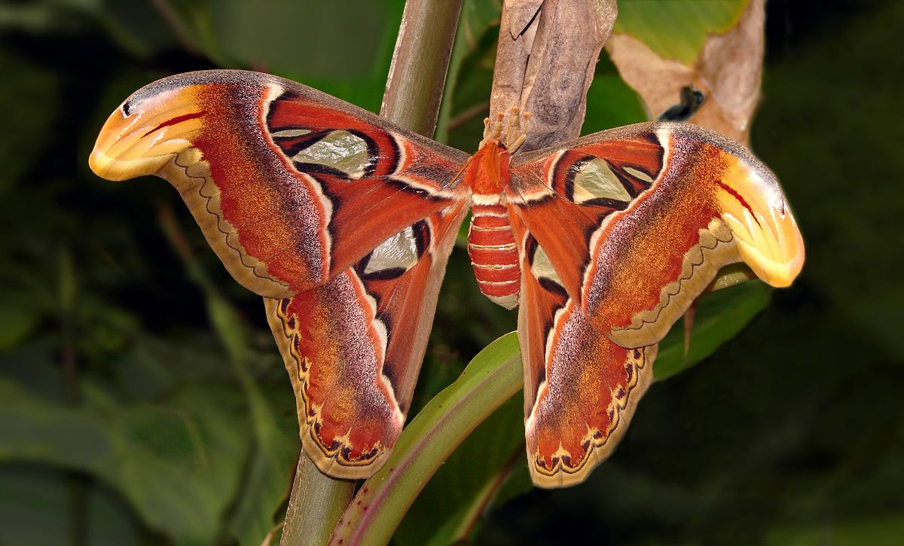

El grupo de los lepidópteros incluye más de 165 000 especies de mariposas y polillas. Es uno de los tipos de insectos más diversos y abundantes. Los adultos se alimentan de néctar y son polinizadores, mientras que las larvas (orugas) son herbívoras.
Entre sus características destaca su compleja metamorfosis (son holometábolos), sus alas membranosas cubiertas de escamas y su espiritrompa. Esta es un aparato bucal chupador muy alargado que mantienen enrollado cuando no se están alimentando.
